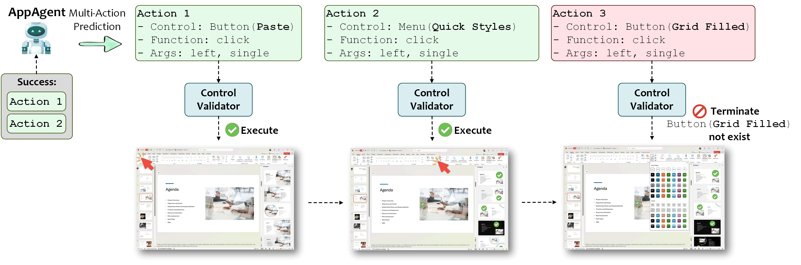

Speculative Multi-Action Execution
UFO² introduces Speculative Multi-Action Execution, a feature that allows agents to bundle multiple predicted steps into a single LLM call and validate them against the live application state. This approach can reduce LLM queries by up to 51% compared to inferring each action separately.
Overview
Traditional agent execution follows a sequential pattern: think → act → observe → think → act → observe. Each cycle requires a separate LLM inference, making complex tasks slow and expensive.
Speculative multi-action execution optimizes this by predicting a batch of likely actions upfront, then validating them against the live UI Automation state in a single execution pass:

Key Benefits:
- Reduced LLM Calls: Up to 51% fewer inference requests for multi-step tasks
- Faster Execution: Batch prediction eliminates per-action round-trips
- Lower Costs: Fewer API calls reduce operational expenses
- Maintained Accuracy: Live validation ensures actions remain correct
How It Works
When enabled, the agent:
- Predicts Action Sequence: Uses contextual understanding to forecast likely next steps (e.g., "Open Excel → Navigate to cell A1 → Enter value → Save")
- Validates Against Live State: Checks each predicted action against current UI Automation state
- Executes Valid Actions: Runs all validated actions in sequence
- Handles Failures Gracefully: Falls back to single-action mode if predictions fail validation
Configuration
Enable speculative multi-action execution in config/ufo/system.yaml:
# Action Configuration
ACTION_SEQUENCE: true # Enable multi-action prediction and execution
Configuration Location: config/ufo/system.yaml (migrated from legacy config_dev.yaml)
For configuration migration details, see Configuration Migration Guide.
Implementation Details
The multi-action system is implemented through two core classes in ufo/agents/processors/schemas/actions.py:
ActionCommandInfo
Represents a single action with execution metadata:
Bases: BaseModel
The action information data.
model_post_init(__context)
Initialize the action string.
Source code in agents/processors/schemas/actions.py
61 62 63 64 65 | |
to_representation()
Generate a function call representation string.
Source code in agents/processors/schemas/actions.py
75 76 77 78 79 80 81 82 83 84 85 86 87 88 89 90 91 92 93 94 95 | |
to_string(command_name, params)
staticmethod
Generate a function call string.
Source code in agents/processors/schemas/actions.py
67 68 69 70 71 72 73 | |
Key Properties:
function: Action name (e.g.,click,type_text)arguments: Action parameterstarget: UI element informationresult: Execution result with status and error detailsaction_string: Human-readable representation
ListActionCommandInfo
Manages sequences of multiple actions:
A sequence of one-step actions.
Source code in agents/processors/schemas/actions.py
103 104 105 106 107 108 109 | |
actions
property
Get the actions.
| Returns: |
|
|---|
length
property
Get the length of the actions.
| Returns: |
|
|---|
status
property
Get the status of the actions.
| Returns: |
|
|---|
add_action(action)
Add an action.
| Parameters: |
|
|---|
Source code in agents/processors/schemas/actions.py
143 144 145 146 147 148 | |
color_print(success_only=False)
Pretty-print the action sequence using presenter.
| Parameters: |
|
|---|
Source code in agents/processors/schemas/actions.py
207 208 209 210 211 212 213 214 215 | |
count_repeat_times(target_action, previous_actions)
Get the times of the same action in the previous actions.
| Parameters: |
|
|---|
| Returns: |
|
|---|
Source code in agents/processors/schemas/actions.py
243 244 245 246 247 248 249 250 251 252 253 254 255 256 257 258 259 260 261 | |
get_function_calls(is_success_only=False)
Get the function calls of the actions.
| Parameters: |
|
|---|
| Returns: |
|
|---|
Source code in agents/processors/schemas/actions.py
308 309 310 311 312 313 314 315 316 317 318 | |
get_results(success_only=False)
Get the results of the actions.
| Parameters: |
|
|---|
| Returns: |
|
|---|
Source code in agents/processors/schemas/actions.py
263 264 265 266 267 268 269 270 271 272 273 | |
get_target_info(success_only=False)
Get the control logs of the actions.
| Parameters: |
|
|---|
| Returns: |
|
|---|
Source code in agents/processors/schemas/actions.py
275 276 277 278 279 280 281 282 283 284 285 286 287 288 289 290 291 | |
get_target_objects(success_only=False)
Get the control logs of the actions.
| Parameters: |
|
|---|
| Returns: |
|
|---|
Source code in agents/processors/schemas/actions.py
293 294 295 296 297 298 299 300 301 302 303 304 305 306 | |
is_same_action(action1, action2)
staticmethod
Check whether the two actions are the same.
| Parameters: |
|
|---|
| Returns: |
|
|---|
Source code in agents/processors/schemas/actions.py
217 218 219 220 221 222 223 224 225 226 227 228 229 230 231 232 233 234 235 236 237 238 239 240 241 | |
to_list_of_dicts(success_only=False, keep_keys=None, previous_actions=None)
Convert the action sequence to a dictionary.
| Parameters: |
|
|---|
| Returns: |
|
|---|
Source code in agents/processors/schemas/actions.py
150 151 152 153 154 155 156 157 158 159 160 161 162 163 164 165 166 167 168 169 170 171 172 173 174 | |
to_representation(success_only=False)
Convert the action sequence to a representation string.
| Parameters: |
|
|---|
| Returns: |
|
|---|
Source code in agents/processors/schemas/actions.py
191 192 193 194 195 196 197 198 199 200 201 202 203 204 205 | |
to_string(success_only=False, previous_actions=None)
Convert the action sequence to a string.
| Parameters: |
|
|---|
| Returns: |
|
|---|
Source code in agents/processors/schemas/actions.py
176 177 178 179 180 181 182 183 184 185 186 187 188 189 | |
Key Methods:
add_action(): Append action to sequenceto_list_of_dicts(): Serialize for logging/debuggingto_representation(): Generate human-readable summarycount_repeat_times(): Track repeated actions for loop detectionget_results(): Extract execution outcomes
Example Scenarios
Scenario 1: Excel Data Entry
Without multi-action:
Think → Open Excel → Observe → Think → Click A1 → Observe → Think → Type "Sales" → Observe → Think → Save → Observe
With multi-action:
Think → [Open Excel, Click A1, Type "Sales", Save] → Observe
Scenario 2: Email Composition
Single-action mode:
Think → Open Outlook → Think → Click New → Think → Enter recipient → Think → Enter subject → Think → Type body → Think → Send
Multi-action mode:
Think → [Open Outlook, Click New, Enter recipient, Enter subject, Type body, Send] → Observe
When to Use
Best for:
✅ Predictable workflows with clear action sequences
✅ Repetitive tasks (data entry, form filling)
✅ Applications with stable UI structures
✅ Cost-sensitive deployments requiring fewer LLM calls
Not recommended for:
❌ Highly dynamic UIs with frequent state changes
❌ Exploratory tasks requiring frequent observation
❌ Error-prone applications where validation is critical per step
❌ Tasks requiring user confirmation between actions
Related Documentation
- AppAgent Processing Strategy — How agents process and execute actions
- Hybrid GUI-API Actions — Combining GUI automation with native APIs
- System Configuration Reference — Complete
system.yamloptions - Configuration Migration — Migrating from legacy
config_dev.yaml
Performance Considerations
Trade-offs:
- Accuracy vs. Speed: Multi-action sacrifices per-step validation for batch efficiency
- Memory Usage: Larger context windows needed to predict action sequences
- Failure Recovery: Invalid predictions require full sequence rollback and retry
Optimization Tips:
- Start Conservative: Test with
ACTION_SEQUENCE: falsebefore enabling - Monitor Validation Rates: High rejection rates indicate poor prediction quality
- Combine with Hybrid Actions: Use API-based execution where possible for fastest performance
- Tune MAX_STEP: Set appropriate
MAX_STEPlimits insystem.yamlto prevent runaway sequences